Approach
* 근골격계 증상 환자의 접근 방법

* 관절 증상으로 나타나는 대표적인 류마티스 질환
| 병태생리학적 특성 | 대표적인 질환 | 호발 부위 |
|---|---|---|
| Synovitis | 류마티스 관절염 | 손목, 손가락 |
| Enthesitis | 강직성 척추염 | 천장골, 척추 |
| Microcrystalline arthritis | 통풍 | 발가락, 발 |
| Cartilage degeneration | 퇴행성 관절염, 골관절염 | 무릎, 허리, 손가락, 고관절 |
| Infection | 감염성 관절염 | 무릎 |
| Myositis | 염증성 근질환 | 근위부 근육 |
| Local conditions | 인대염 | 다양한 부위 |
| General condition | 섬유근육통 | 다양한 부위 |
| Multisystem inflammation disease | 루푸스 | 다양한 부위 |
1. 관절 vs 비관절
| 관절성 | 비관절성 |
|---|---|
| 활막, 활액, 관절연골, 관절내 인대, 관절 피막, 관절 주위 뼈 | 관절 주변 인대, 힘줄, 윤활낭, 근육, 근막, 뼈, 신경, 피부 |
| 깊은 곳에서 느끼는 미만성 통증 | 관절과 떨어진 부위의 국소적 통증 |
| 능동, 수동 운동 시 움직임의 제한 | 능동 운동시 통증, 수동 운동에는 통증이 없음. 특정한 움직임이나 자세에 의해 유발되기도 함. |
| 관절 부종 (활막 증식, 삼출, 골형성) | 거의 없음 |
| 관절 마찰음, 불안정성, 변형 | 거의 없음 |
1-1. 연부 조직 류마티즘
: 관절 주위 구조를 침범하는 질환을 총칭 - Tendinitis - Enthesitis - Bursitis - Structural disorder - Neurovascular entrapment disorders - Complex regional pain syndrome (CRPS) - Myofascial pain syndrome - Generalized pain disorders
2. 급성 vs 만성
2-1. 급성 (발병 6주 이내)
- second to minutes : internal derangement, fracture, or trauma
- Over hours to 2 days : usually inflammation or infection-related
| 염증성 | 비염증성 |
|---|---|
| Septic arthritis | Trauma or internal derangement |
| Crystal arthritis | Non-inflammatory joint disease |
| Reactive arthritis | Bone disease |
| Existing inflammatory polyarthritis | Metastatic disease |
| Existing systemic disease-related | Soft tissue lesions |
| 관절액분석 : 천자가 가능하고 원인을 감별하고자 할 때 시행한다. | |||||
|---|---|---|---|---|---|
| 정상 | 비염증관절염 | 염증관절염 | 화농관절염 | 출혈관절염 | |
| 색 | 무색/투명한 황색 | 황색 | 황색/백색 | 백색/다양 | 붉은색 |
| 투명도 | 투명 | 투명 | 투명/탁함 | 탁함 | 탁함 |
| 점도 | 매우 높음 | 높음 | 낮음 | 매우 낮음/다양 | |
| 백혈구 | <150 | <2000 | 2000~50000 | >50000 | |
| PMN | <25% | <25% | >70% | >90% | |
| 배양 | 음성 | 음성 | 음성 | 양성 | 음성 |
| 진단 | OA Traumatic arthritis Early RA AVN |
RA Acute crystalopathy Viral arthritis PsA ReA |
Septic arthritis | Trauma Coagulopathy Tumor Charcot arthropathy |
|
- 비염증관절염과 염증관절염의 구분 : WBC 2000~3000이 기준
3. 염증성 vs 비염증성
| 염증성 | 비염증성 | |
|---|---|---|
| 경직 | 1시간 이상, 조조강직 | 1시간 미만, 낮 활동 시, 간헐적 |
| 활동시 | 호전 | 악화 |
| 염증의 징후 | 발적, 열감, 압통, 부종 등을 동반 | 부종이나 열감을 동반하지 않은 통증 |
| 전신 증상 | 피로, 발열, 발진, 체중 감소 | (대개는) 없음 |
| 검사실 소견 | ESR/CRP 상승, 혈소판 증가, 만성 질환에 의한 빈혈, 저알부민혈증 등 | 정상 |
| 원인 | 감염, 결정관절염, 면역성, 반응성 | 외상, 반복적인 사용, 퇴행성, 종양, 통증 전달 이상 |
4. 관절 침범 개수
4-1. Chronic mono - & oligoarticular (1-3)
| 감염성 관절염 & 종양 | 비염증성 | 염증성 |
|---|---|---|
| Mycobacterial | Osteoarthritis | Crystal induced |
| Fungal, Bacterial, Viral | Internal derangement | Monoarticular RA |
| Pigmented villonodular synovitis (PVNS) | Osteonecrosis | Early-onset pauciarticular JIA |
| Lipoma arborescens, Metastasis | Synovial osteochondromatosis | Seronegative SpA (AS, ReA, enteropathic, undifferentiated SpA ) |
| Reflex sympathetic dystrophy | Psoriatic arthropathy | |
| Hemarthrosis | Foreign body synovitis | |
| Neuropathic | Sarcoidosis | |
| Paget disease | Behcet's arthritis | |
| Stress fracture | ||
| Transient regional osteoporosis | ||
| Juvenile osteochondroses |
4-2. Chronic polyarticular (>4)
| 결체조직질환 관련 | 비염증성 | 염증성 |
|---|---|---|
| Systemic lupus erythematosus | Generalized osteoarthritis | Rheumatoid arthritis |
| Behcet disease | Soft tissue rheumatism | Psoriatic arthritis |
| Polyarteritis nodosa | Hypermobility | Reactive arthritis |
| Undifferentiated CTD | Fibromyalgia | Ankylosing spondylitis |
| Enteropathic arthritis | ||
| Polyarticular gout or pseudogout |
5. 관절 침범 부위와 패턴
5-1. 관절 침범 부위
| 대칭적 | 비대칭적 |
|---|---|
| RA, JIA (systemic/polyarticular types) | Ankylosing spondylitis |
| AOSD | Reactive arthritis, PsA (oligoarticular type), Enteropathic arthritis, Undifferentiated SpA |
| Systemic lupus erythematosus | Behcet's ds. |
| Mixed Connective Tissue Disease | JIA (Pauciarticular types) |
| Polymyalgia Rheumatica | Palindromic rheumatism |
| Rheumatic fever (Adult onset) |
5-2. 관절 침범 패턴
| 대칭성 | 침범관절 수 | 대/소관절 | 분포 | 상/하지 | 진단 |
|---|---|---|---|---|---|
| 대칭적 | 다관절 | 대/소관절 | 말초관절 | 상/하지 | 류마티스관절염 |
| 비대칭적 | 소수관절 | 대관절 | 척추/말초관절 | 하지 | 강직성 척추염 |
| 비대칭적 | 소수 or 다관절 | 대/소관절 | 말초관절 | 상/하지 | 건선관절염 |
| 비대칭적 | 소수 or 다관절 | 대관절/손발가락염 | 말초관절 | 하지 | 반응관절염 |
| 비대칭적 | 단 or 소수관절 | 대/소관절 | 말초관절 | 상/하지 | 통풍 |
6. 임상 병력과 전신 증상
6-1. 나이 & 성별
| 연령 | 여성 | 남녀공통 | 남성 |
|---|---|---|---|
| 소아 (0~16) |
외상, 바이러스, JIA | ||
| 청소년 (17~35) |
류마티스관절염, 전신홍반루푸스 | 건선관절염 | 반응관절염, 강칙척추염 |
| 중년 (35~65) |
류마티스관절염 | 골관절염 | 통풍 |
| 노년 (>65) |
골관절염 류마티스관절염 류마티스다발근통 결정관절염 (통풍, 가성통풍) |
6-2. 병력 청취
| 주요 유발 / 촉진 인자 | |
|---|---|
| 인자 | 질환 |
| 외상 | 골괴사, 반월판 손산 |
| 감염력 | 류마티스열, 반응관절염, 바이러스성 간염 |
| 당뇨병 | CTS, 당뇨병성 손관절증, trigger finger |
| 신부전 | 통풍 |
| 건선 | 건선관절염 |
| 골수종 | 하부 요통 |
| 암 | 근육염, 부종양 증후군 |
| 골다공증 | 골절 |
| 주요 유발 약제 | |
|---|---|
| 증상 | 유발약제 |
| 관절통 | Aromatase inhibitor, cimetidine, quinolone, interferon, vaccine, HIV protease inhibitor |
| 근육통 | Statin, glucocorticoid, penicilamine, hydroxychloroquine, interferon, colchicine, bisphosphonate, taxol, quinolone, cyclosporine |
| 통풍 | Diuretics, aspirin, chemotherapeutic agent, anti-tuberculosis medication |
| 골괴사 | Glucocorticoid (high dose), alcohol, radiation therapy, bisphosphonate |
| 혈관염 | Allopurinol, penicillamine, propylthiouracil, anti-TNF agent, hepatitis B vaccine, trimethoprim/suIfamethoxazole |
| 주요 전신 증상 | |
|---|---|
| Symptom | Possible Dx. |
| Nonspecific | |
| Malaise | Inflammatory disease, malignancy |
| Fever | SLE, septic arthritis, AOSD |
| Weight loss | Inflammatory disease, malignancy |
| Anorexia | Inflammatory disease, malignancy |
| Aging | PMR |
| Neurologic | |
| Headaches | SLE, temporal arteritis |
| Numbness or paresthesia | Neuropathy-compression |
| Weakness | Myositis, neuropathy |
| Stroke | APLS |
| Epilepsy | SLE |
| Eyes | |
| Dry eyes | Sjogren syndrome |
| Red eyes | Spondyloarthritis, Sarcoidosis |
| Visual loss | Temporal arteritis, Behcet's disease |
| Mouth | |
| Dry mouth | Sjogren syndrome |
| Mouth ulcers | Reactive arthritis, Behcet disease, IBD |
| Skin | |
| Rashes | |
| Psoriasis | PsA |
| Livedo reticularis | SLE |
| Erythema nodosum | Acute sarcoid or erythema nodosum arthropathy, Behcet disease |
| Telangiectasia | Systemic sclerosis |
| Other | Viral - rubella, human parvovirus |
| Photosensitivity | CTD |
| Ulcers | Behcet disease, vasculitis |
| Raynaud phenomenon | CTD |
| Nodules | OA, RA, gout, hyperlipidemia, SLE, rheumatic fever, PAN, multicentric histiocytosis |
| Alopecia | SLE |
| Nail | PsA, ReA |
| Respiratory | |
| Pleuritis | CTD |
| Breathlessness | Pulmonary involvement of inflammatory disease |
| GI | |
| Indigestion, history of peptic ulcer | NSAlD-associated gastritis or ulceration |
| Diarrheal illness | Reactive arthritis, IBD |
| Genitourinary | |
| Renal stones | Gout |
| Dysuria | ReA, Behcet disease, acute gonococcal arthritis |
| Genital ulcer | ReA, Behcet disease, acute gonococcal arthritis |
| Vaginal discharge | ReA. Behcet disease, acute gonococcal arthritis |
| Hematologic | |
| Thrombosis or thromboembolism | APS |
| Anemia | Inflammatory disease |
| Obstetric History | |
| Fetal loss - early and late | APS |
| lUGR | APS |
| Preeclampsia | APS |
| Trauma | |
| Fracture | Osteoporosis |
| Ligament rupture | OA in the future |
| Sprains and strains | Hypermobility syndrome |